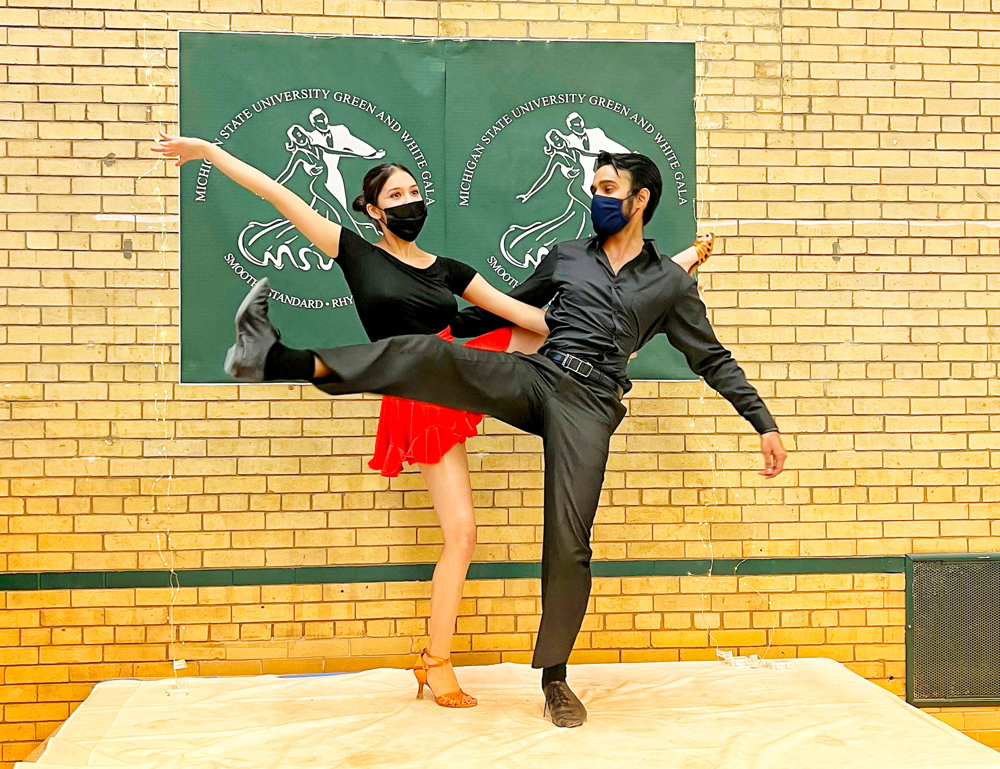

I look something like this in low light
My name is Anil Battalahalli (ಅನಿಲ ಬಟ್ಟಲಹಳ್ಳಿ)
At the graduate school, I worked as a Graduate Student Research Assistant (GSRA) for the Data Science for Dynamic Intervention Decision-making Center (d3c), a research center at the Institute for Social Research, University of Michigan. At d3c I worked on developing statistical computational tools for clustered Sequential Multiple Assignment Randomized Trials (SMART).
The coolest research lab
I am currently continuing my work on the development of a multilevel approach for analyzing data that arises from a clustered SMART at d3c.
Co-authored a poster that was presented at the Michigan Student Symposium for Interdisciplinary Statistical Sciences (MSSISS)
I also like building electronic circuits, robots, and embedded systems projects to automate absolutely useless things. I have started several startups right from my high school times in robotics, industrial automation, IoT, etc. None of them really took off, but you might often catch me throwing the “it was a learning opportunity and I don’t regret it” mantra to cope.
I’m proficient in Python and R, and I’m trying to learn Julia. I also do machine learning, NLP, deep learning, <** insert other tech buzzwords **>
Some Hobbies
Apart from the nerd stuff, I love producing electronic music. I predominantly use FL Studio 20 (DAW) and Serum (Sound Design)
I produced the following slap house track for Blink, a Kannada movie
Add it on Apple Music or Spotify
I do film photography and develop B&W and C-41 color film at home
Self-portrait with Konica Auto S2 (a camera from 1965) and Cinestill 400D film
You can find my work here on lomography (external link)
I also did Ballroom Dancing at the Umich Ballroom Dance Team for a year

MSU 2022 Green & White Gala